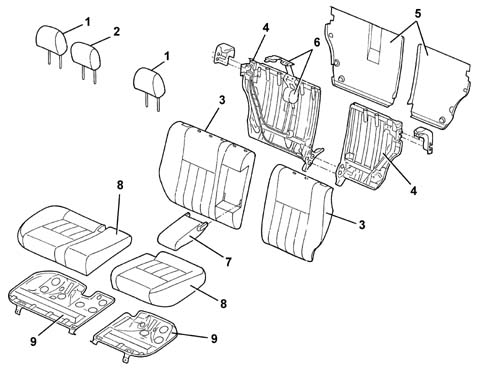

Introduction - REAR SEATS
- Path
- Descriptions > 70 FITTINGS > 7050 REAR SEATS > Introduction - REAR SEATS
- Kind
- system description
- Applies to
- all engines; all production periods
- Interactive page
- https://sloeber94.github.io/elrnDB-a147/en/#/3026126
Applies to: all engines; all production periods
SPECIFICATIONS:
The rear seats are fitted with squabs built to ensure maximum occupant safety in the case of various types of impact. They also prevent items in the luggage compartment from being propelled forward.
The rear cushions come with a pressed steel base with antislip profile that forms an effective antisubmarining structure in conjunction with the beam welded to the rear floor pan.
The rear seat squab can be folded separately 40/60%. This feature is standard on all cars. A fold-down arm-rest is located on the squab between the two side seats.
The seats are fitted with two head restraints for the side seats. these can be adjusted to two positions. Certain versions come with a third head restraint for the central seat with the same specifications. Versions with a third head restraint also come with a central inertia reel seat belt.
COMPOSITION
View of assembly

1 - Side head restraint 2 - Central head restraint 3 - Squab trim and padding 4 - Squab structure 5 - Squab cover 6 - Central seat belt (with reel) 7 - Armrest 8 - Cushion trim and padding 9 - Cushion base